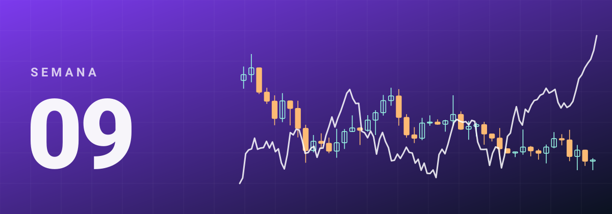
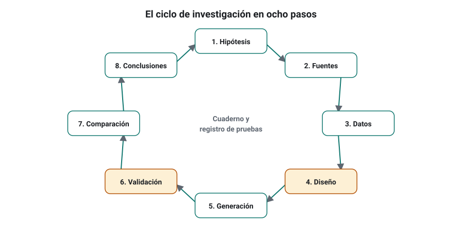
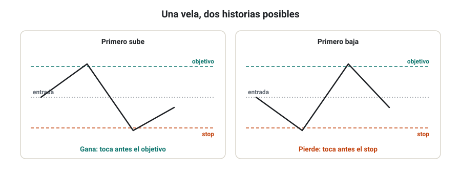
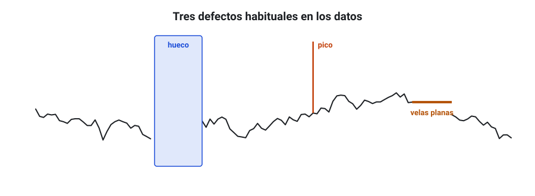
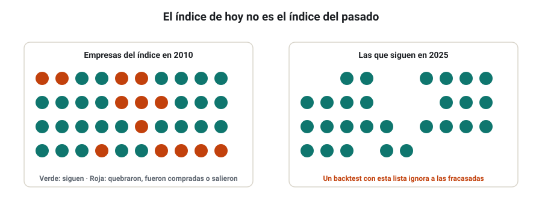
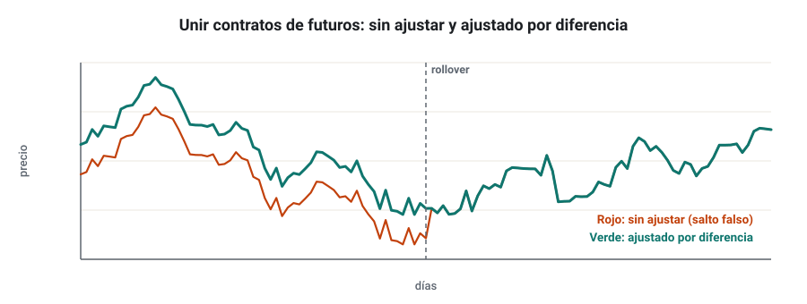
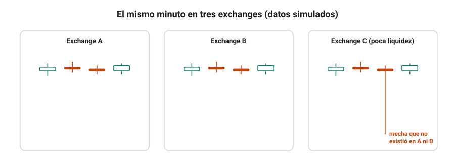

SEMANA 09 · ETAPA 3 · INVESTIGACIÓN Y VALIDACIÓN
Investigación de mercado y calidad de datos
Presentación de la semana
Empieza la etapa 3, el corazón del curso. En la etapa 2 aprendiste a generar estrategias; en esta aprenderás a no creértelas hasta que superen un protocolo de validación serio. Esta primera semana trabajarás dos cimientos: el ciclo de investigación completo y la calidad de los datos de los cuatro mercados. Una investigación brillante con datos defectuosos es una investigación inútil, y cada mercado tiene sus trampas: ajustes en acciones, vencimientos en futuros, diferencias entre exchanges en criptomonedas.
Objetivos
Al terminar la semana sabrás:
- Aplicar el ciclo de investigación completo de ocho pasos.
- Detectar huecos, duplicados, picos y otros defectos en los datos.
- Comparar proveedores de datos y respetar sus licencias.
- Tratar los ajustes por dividendos y splits y evitar el sesgo de supervivencia.
- Construir y entender contratos continuos de futuros.
- Evaluar la calidad de los datos de criptomonedas.
- Elaborar un informe de calidad de datos.
Plan de la semana (22–25 horas)
| Bloque | Horas | Qué harás |
|---|---|---|
| Clases | 6 | Siete lecciones: lectura y vídeos |
| Prácticas | 12 | Revisión de datos de dos mercados e informe de calidad |
| Investigación y evaluación | 4 | Investigación I-09, entrega y examen |
| Revisión y planificación | 2 | Glosario, cuaderno y plan de la semana 10 |
Qué necesitas
- SQX y tus datos de EUR/USD.
- Datos de un segundo mercado: un índice (por ejemplo, el DAX o el S&P 500 en CFD o futuro), una acción o Bitcoin.
- Tu hoja de cálculo.
Criterio para desbloquear la semana 10
Tener en estado APROBADO, con un 80 % o más cada uno:
- ☐ Examen de la semana 9
- ☐ Entrega práctica: informe de calidad de datos de dos mercados
- ☐ Investigación I-09: los ocho pasos documentados
El ciclo de investigación en ocho pasos
Formato: clase de 35 minutos · Lectura: 30 minutos
El ciclo completo
Desde la semana 1 has practicado algunos pasos del ciclo. A partir de ahora lo aplicarás entero en cada investigación:

| Paso | Qué haces | Error que evita |
|---|---|---|
| 1. Hipótesis | Escribir una afirmación concreta y comprobable, con su explicación | Buscar sin saber qué buscas |
| 2. Fuentes | Leer lo que ya se sabe y citarlo | Reinventar lo conocido o ignorar lo refutado |
| 3. Datos | Elegir y revisar los datos adecuados | Conclusiones sobre datos defectuosos |
| 4. Diseño | Fijar qué medirás, cómo y qué resultado confirmaría o refutaría la hipótesis | Cambiar el criterio después de ver los resultados |
| 5. Generación | Construir o generar las estrategias según el diseño | Probar sin control |
| 6. Validación | Aplicar el protocolo de robustez (semanas 10 a 12) | Aceptar resultados por azar |
| 7. Comparación | Comparar con alternativas y con un benchmark | Creer bueno lo que solo es normal |
| 8. Conclusiones | Decidir: aceptar, rechazar o repetir; documentar limitaciones | Olvidar lo aprendido |
El registro de pruebas
Para combatir el sesgo de selección, anota todas las pruebas que haces, no solo las que salen bien: cuántos proyectos, cuántas variantes, cuántas estrategias miraste. Si probaste 50 variantes para encontrar una buena, la confianza que merece es mucho menor que si la primera ya funcionó. En la semana 10 usarás este número.
Comprueba que lo has entendido
- ¿Por qué el paso 4 debe hacerse antes del 5?
- ¿Para qué sirve anotar las pruebas que fallan?
- Escribe una hipótesis completa (afirmación, explicación y criterio de refutación) sobre EUR/USD.
Datos tick, OHLC, bid y ask; continuidad, huecos y duplicados
Formato: clase de 40 minutos · Lectura: 35 minutos
Qué precio guardan tus datos
- Bid, ask o medio: la mayoría de los datos de Forex son bid. Si tus datos son bid, las compras en el backtest se ejecutan con el bid más el spread que configures. Si mezclas datos bid con un spread que ya está incluido, contarás el coste dos veces o ninguna.
- Último negociado: en acciones y futuros, las velas suelen construirse con los precios de las operaciones realizadas.
- OHLC frente a tick: con velas OHLC, el programa no sabe en qué orden se tocaron el máximo y el mínimo dentro de la vela. Si una vela toca a la vez tu stop y tu objetivo, el resultado depende de una suposición. Con datos más finos (M1 o tick), la suposición importa mucho menos.

Los defectos más comunes
| Defecto | Cómo se ve | Cómo detectarlo |
|---|---|---|
| Hueco (gap de datos) | Faltan velas o días enteros | Contar velas por día y buscar días con muchas menos |
| Duplicado | La misma vela dos veces | Buscar fechas y horas repetidas |
| Pico (spike) | Un precio absurdo durante una vela | Buscar velas con rango mayor que N veces el ATR |
| Velas planas | Apertura = máximo = mínimo = cierre muchas veces seguidas | Contar velas sin rango en horas de mercado |
| Desplazamiento horario | Todo el patrón movido una hora en parte del año | Revisar el horario de verano y comparar con el broker |

Comprueba que lo has entendido
- ¿Por qué importa saber si tus datos son bid o ask?
- ¿Qué problema tienen los datos OHLC con los stops y objetivos dentro de una vela?
- ¿Cómo detectarías un pico en la hoja de cálculo?
Diferencias entre proveedores; licencias y derechos de uso
Formato: clase de 30 minutos · Lectura: 25 minutos
No existe «el precio»
En Forex no hay un mercado central (semana 1): cada proveedor construye sus precios con las cotizaciones de sus fuentes. Por eso, dos proveedores dan velas ligeramente distintas. En acciones y futuros hay un mercado oficial, pero también hay diferencias según qué operaciones se incluyen, cómo se tratan los ajustes y la hora de cierre.
Cómo comparar proveedores
- Elige un mismo periodo y una temporalidad (H1 o D1).
- Compara apertura, máximo, mínimo y cierre vela a vela, en pips o en porcentaje.
- Compara el número de velas por día y los huecos.
- Haz un backtest de la misma estrategia con ambos: si el resultado cambia mucho, la estrategia depende de detalles de los datos y no es robusta (lo usarás en la semana 12).
Licencias y derechos de uso
Los datos tienen dueño. Antes de usarlos:
- Lee las condiciones de uso del proveedor: muchos permiten el uso personal y prohíben redistribuir los datos.
- No compartas archivos de datos con otras personas si la licencia no lo permite, ni siquiera con compañeros del curso.
- Para un uso comercial (por ejemplo, vender señales o gestionar dinero de otros), la licencia suele ser distinta y de pago.
Comprueba que lo has entendido
- ¿Por qué dos proveedores de Forex dan velas distintas?
- ¿Qué indica que el resultado de una estrategia cambie mucho al cambiar de proveedor?
- ¿Qué debes comprobar antes de compartir un archivo de datos?
Acciones: ajustes por dividendos y splits, sesgo de supervivencia
Formato: clase de 35 minutos · Lectura: 30 minutos
Precios ajustados
En la semana 2 viste que un split o un dividendo hacen saltar el precio sin que cambie el valor de tu inversión. Para investigar, hay que usar precios ajustados: el proveedor corrige los precios anteriores al evento para que la serie sea continua.
- Ajuste por splits: imprescindible siempre.
- Ajuste por dividendos: necesario si quieres medir la rentabilidad total. Si tu estrategia opera CFD que pagan o cobran el dividendo como ajuste, piensa qué serie representa mejor lo que cobrarías.
El sesgo de supervivencia
Si pruebas una estrategia sobre las empresas que hoy forman el S&P 500, solo pruebas sobre las ganadoras: las que quebraron, fueron compradas o salieron del índice no están. El resultado sale mejor de lo que habría sido. Para evitarlo, necesitas datos libres de sesgo de supervivencia: con las empresas que estaban en el índice en cada fecha, incluidas las que ya no existen.

Este tipo de datos suele ser de pago. Si no los tienes, documenta la limitación y sé prudente con las conclusiones.
Comprueba que lo has entendido
- ¿Por qué no debes usar niveles de precio absolutos con precios ajustados?
- Explica el sesgo de supervivencia con un ejemplo.
- ¿Qué datos necesitas para evitarlo?
Futuros e índices: rollovers y contratos continuos
Formato: clase de 35 minutos · Lectura: 30 minutos
El problema del vencimiento
Un futuro vence (semana 2). Para hacer un backtest de varios años, necesitas unir los contratos sucesivos en una serie continua. En el momento del cambio (el rollover), el contrato nuevo cotiza a un precio distinto del viejo, por los intereses y los dividendos esperados. Si unes las series sin más, aparece un salto falso.
Tres formas de construir la serie
| Método | Cómo funciona | Ventaja | Inconveniente |
|---|---|---|---|
| Sin ajustar | Se encadenan los precios tal cual | Precios reales | Saltos falsos en cada rollover |
| Ajuste por diferencia (back-adjusted, «método Panamá») | Se suma o resta el salto a todos los precios anteriores | Sin saltos; las variaciones en puntos son reales | Los precios antiguos no son reales y pueden ser negativos |
| Ajuste proporcional (ratio-adjusted) | Se multiplican los precios anteriores por el cociente | Sin saltos; las variaciones en porcentaje son reales | Las variaciones en puntos de los precios antiguos cambian |

Cuándo hacer el rollover
Los proveedores cambian de contrato con reglas distintas: un número fijo de días antes del vencimiento, o cuando el volumen o el interés abierto del contrato siguiente supera al actual. Anota qué regla usa tu serie.
Los CFD sobre índices
Muchos CFD sobre índices replican el futuro o el contado con su propio ajuste. Si generas con datos del futuro y operas un CFD (o al revés), comprueba que se parecen: niveles, horarios y costes de financiación.
Comprueba que lo has entendido
- ¿Por qué aparece un salto en el rollover?
- ¿Qué método de ajuste conserva las variaciones en puntos? ¿Y en porcentaje?
- ¿Qué comprobarías antes de operar un CFD con una estrategia generada con datos del futuro?
Criptomonedas: diferencias entre exchanges y calidad del dato
Formato: clase de 30 minutos · Lectura: 25 minutos
Muchos mercados para un mismo activo
Bitcoin cotiza en decenas de exchanges, cada uno con su libro de órdenes. Los precios se parecen, pero no son iguales, sobre todo en momentos de pánico (semana 2).
Problemas típicos
- Mechas extremas: en un exchange con poca liquidez, una orden grande puede producir una mecha enorme que no existió en los demás.
- Caídas del exchange: periodos sin datos cuando el exchange se colapsa por exceso de tráfico, justo en los momentos más volátiles.
- Pares contra stablecoins: BTC/USDT no es exactamente BTC/USD; si la stablecoin pierde su paridad, el precio cambia sin que Bitcoin se mueva.
- Historia corta y cambiante: el mercado de hace ocho años no se parece al actual en liquidez, participantes ni regulación.

Comprueba que lo has entendido
- ¿Por qué una mecha en un exchange pequeño puede engañar al Builder?
- ¿Qué diferencia hay entre BTC/USD y BTC/USDT?
- ¿Qué datos usarías para investigar una estrategia de Bitcoin que operarás en un CFD?
Taller: informe de calidad de datos
Formato: taller guiado de 60 minutos · Práctica: 6–8 horas
Elaborarás un informe de calidad de dos conjuntos de datos: tu EUR/USD y un segundo mercado (un índice, una acción o Bitcoin). Ese informe será el anexo de datos de tu proyecto final.
Paso 1 · Ficha de cada conjunto
Proveedor, licencia, tipo de precio (bid, ask, último), zona horaria, sesión, rango de fechas, temporalidad, número de velas y, si aplica, método de ajuste o de rollover.
Paso 2 · Pruebas de calidad
Exporta los datos H1 a tu hoja (o usa los resúmenes de SQX) y calcula:
- Velas por día: número de velas de cada día; marca los días con menos del 80 % de lo normal.
- Duplicados: fechas y horas repetidas.
- Picos: velas con un rango mayor que 5 veces el ATR(14).
- Velas planas: velas con rango cero en horas de mercado.
- Fines de semana y festivos: que no haya velas cuando el mercado está cerrado (o que sí las haya en cripto).
- Horario de verano: que la primera vela de la semana empiece a la misma hora del servidor todo el año.
Paso 3 · Comparación con otra fuente
Compara 20 velas D1 de cada conjunto con otra fuente (tu broker u otro proveedor). Calcula la diferencia media en porcentaje.
Paso 4 · Veredicto
Para cada conjunto: apto, apto con limitaciones (cuáles) o no apto. Explica qué harías con los defectos encontrados (corregir, eliminar el periodo o cambiar de fuente).
Comprueba que lo has entendido
- ¿Cuántos defectos encontraste en cada conjunto?
- ¿Algún defecto podría haber cambiado el resultado de una estrategia?
- ¿Qué conjunto usarías para tu proyecto final?
Glosario de la semana
| Término | Inglés | Definición |
|---|---|---|
| Ajuste por diferencia | Back adjustment | Corrección de un contrato continuo sumando o restando el salto del rollover |
| Ajuste proporcional | Ratio adjustment | Corrección de un contrato continuo multiplicando por el cociente del rollover |
| Benchmark | Benchmark | Referencia con la que se compara un resultado |
| Contrato continuo | Continuous contract | Serie que une contratos de futuros sucesivos |
| Datos libres de supervivencia | Survivorship-free data | Datos que incluyen los activos que dejaron de existir |
| Duplicado | Duplicate | Registro repetido en los datos |
| Hueco de datos | Data gap | Periodo en el que faltan datos |
| Interés abierto | Open interest | Número de contratos de futuros abiertos |
| Licencia de datos | Data license | Condiciones de uso de unos datos |
| Pico | Spike | Precio anómalo durante un instante o una vela |
| Precio ajustado | Adjusted price | Precio corregido por splits, dividendos u otros eventos |
| Registro de pruebas | Test log | Lista de todas las pruebas realizadas, incluidas las fallidas |
| Stablecoin | Stablecoin | Criptomoneda diseñada para mantener la paridad con una divisa |
| Vela plana | Flat bar | Vela sin rango: apertura, máximo, mínimo y cierre iguales |
Ejercicios obligatorios
E1 · Hipótesis completa. Escribe dos hipótesis completas (afirmación, explicación y criterio de refutación) para el segundo mercado que hayas elegido.
E2 · Bid y ask. Tus datos son bid y configuras 1 pip de spread. Una estrategia compra a la apertura de una vela que abre en 1,08500. ¿A qué precio entra en el backtest? ¿Y si vendiera?
E3 · Dentro de la vela. Una vela H1 tiene apertura 1,0850, máximo 1,0880 y mínimo 1,0825. Tienes una compra a 1,0850 con stop en 1,0830 y objetivo en 1,0875. ¿Qué resultados son posibles? ¿Qué datos necesitas para saberlo?
E4 · Picos. Diseña las fórmulas de hoja de cálculo para marcar las velas cuyo rango supere 5 veces el ATR(14).
E5 · Precios ajustados. Una acción cotizaba a 200 $ e hizo un split 4 por 1. En la serie ajustada, ¿a qué precio aparece una vela anterior que cerró a 180 $? ¿Qué pasaría con la regla «comprar si el precio < 100 $»?
E6 · Supervivencia. Busca un ejemplo real de empresa que saliera del S&P 500 o del IBEX 35 por quiebra o mala evolución. Explica cómo afectaría su ausencia a un backtest.
E7 · Rollover. El contrato viejo cierra en 5.000 puntos y el nuevo cotiza a 5.040 el mismo día. Construye la serie ajustada por diferencia y por proporción para un precio anterior de 4.800.
E8 · Licencia. Busca las condiciones de uso de tu proveedor de datos principal. ¿Permiten la redistribución? ¿Y el uso comercial? Cita el texto relevante con la fecha de consulta.
E9 · Cripto. Compara el máximo y el mínimo diarios de Bitcoin de un mismo día en dos exchanges o fuentes distintas. Calcula la diferencia en porcentaje.
E10 · Registro de pruebas. Reconstruye tu registro de pruebas de las semanas 6 a 8: cuántos proyectos, cuántas variantes y cuántas estrategias examinaste.
Investigación I-09 y entrega práctica
Investigación I-09 · ¿Cambian mis estrategias con otro proveedor de datos?
Esta semana aplicas los ocho pasos. El paso 6 (validación) será sencillo: la comparación entre proveedores es en sí una prueba de robustez.
Paso 1 · Hipótesis. Ejemplo: «Las dos estrategias propias de la semana 8 mantienen un profit factor dentro de un ±15 % al probarlas con datos de mi broker en lugar de los del proveedor gratuito».
Paso 2 · Fuentes. Busca y cita al menos una fuente sobre diferencias entre proveedores de datos y su efecto en los backtests.
Paso 3 · Datos. Dos conjuntos de EUR/USD del mismo periodo: los de SQX y los de tu broker, ambos en la zona horaria del broker. Revisa ambos con el taller.
Paso 4 · Diseño. Define el periodo común, las estrategias, las métricas y la tolerancia aceptable antes de probar.
Paso 5 · Generación. No generas nada nuevo: usas las estrategias de la semana 8.
Paso 6 · Validación. Prueba cada estrategia con ambos conjuntos en el Retester con la misma configuración.
Paso 7 · Comparación. Tabla con las métricas en cada conjunto y su diferencia en porcentaje.
Paso 8 · Conclusiones. ¿Se confirma? Si alguna estrategia cambia mucho, ¿qué parte de sus reglas crees que depende de los datos?
Entrega práctica · Informe de calidad de datos
Qué entregar
| Archivo | Contenido |
|---|---|
CODIGO_S09_ENT |
Informe de calidad de los dos conjuntos: fichas, resultados de las seis pruebas, comparación con otra fuente y veredicto |
CODIGO_S09_HOJA |
Hoja con las pruebas de calidad y sus fórmulas |
CODIGO_S09_INV |
Investigación I-09 con los ocho pasos |
| Ejercicios | E1 a E10 |
Cómo se evaluará
Se valora que las pruebas se apliquen con fórmulas, que los defectos se documenten con ejemplos concretos (fecha y hora) y que el veredicto sea coherente con lo encontrado. Un informe sin pruebas cuantitativas queda como NO EVALUABLE.
Examen de la semana 9 · Variante A
Tiempo orientativo: 60 minutos · Puntuación: 100 puntos · Aprobado: 80 puntos · Puedes usar calculadora, pero no el material del curso ni el tutor de IA. Si suspendes, repetirás con otra variante.
Parte A · Opción múltiple (30 puntos, 2 por pregunta)
Parte B · Cálculo (45 puntos, 15 por ejercicio)
B1. Un conjunto de datos H1 de Forex debería tener 24 velas por día laborable. En un año de 260 días encuentras 5.950 velas, 12 días con menos de 19 velas, 30 velas duplicadas y 4 velas con rango mayor que 5 ATR. a) ¿Qué porcentaje de velas falta respecto a lo esperado (sin contar duplicados)? b) ¿Qué porcentaje de días tiene huecos importantes? c) ¿Lo calificarías como apto? Justifícalo.
B2. Un contrato de futuros viejo cierra en 18.200 puntos y el nuevo cotiza a 18.290 en el rollover. Un precio anterior es 17.500. Calcula ese precio en la serie: a) ajustada por diferencia; b) ajustada proporcionalmente. c) ¿Qué variación porcentual entre 17.500 y 18.200 conserva cada método?
B3. Pruebas una estrategia con dos proveedores: con el A obtiene un profit factor de 1,52 y 310 operaciones; con el B, 1,21 y 296 operaciones. a) Calcula la diferencia en profit factor en porcentaje respecto al A. b) Si tu tolerancia era del ±15 %, ¿pasa la prueba? c) ¿Qué investigarías a continuación?
Parte C · Razonamiento (25 puntos)
En un máximo de 250 palabras: quieres investigar una estrategia de reversión en acciones del S&P 500 con datos diarios gratuitos. Explica qué problemas de datos esperas encontrar y cómo los tratarías o documentarías.